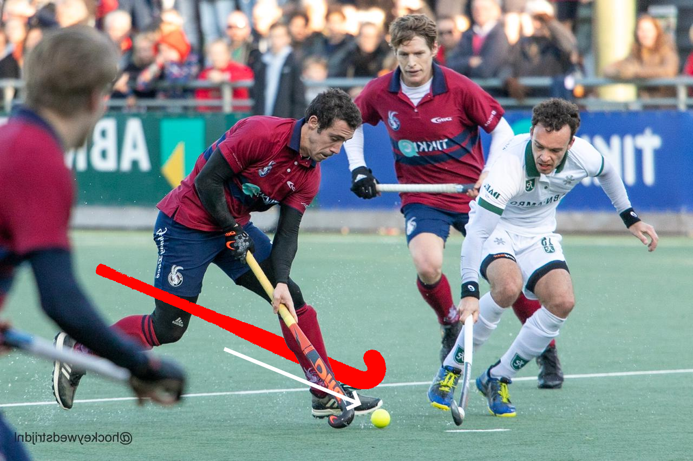

Hockey
Vanaf mijn 8e/9e heb ik gehockeyd. Tuurlijk begin je dan in een kindergroepje maar dat maakt het niet minder leuk.
Uiteindelijk kwam je dan in een team waarmee je wedstrijden gaat spelen.
In de tussentijd ben ik ook mijn, tot heden, beste vriend tegen gekomen. Kortom, ik ben al beste maten met die gast meer dan 10 jaar.
Ik kan bij hem met alles terecht, maakt niet uit wat. Maar dat betekent wel dat het een echte goede vriend is. Hij hoort ook wel bij m'n familie.
Ik heb nooit in een eerste team gespeeld, maar heb met plezier in 2/3/4e teams gespeeld.
Ik was vrijwel altijd de snelste, ik stond ook rechtsvoor dus ik moest bijna altijd de laatste sprint in zetten, de bal naar het goal schieten en hopen dat daar dan iemand stond om alles af te maken.
Maar toen ik 16 was denk ik, gebeurde er iets minder leuks. Hier naast lees je wat.
|
Ongeluk
Nou toen ik dus (volgens mij) 16 was kreeg ik een ongeluk, vandaar ook de kleine pleister op m'n knie op de home-pagina.
Wat was er toen precies gebeurd?
Ik was toen bezig met een wedstrijd en ik had de bal, ik stond spits dus ik sprintte door het midden met de bal.
De tegenpartij wisten dat ze zo'n duel niet konden winnen dus loste ze dat maar op door agressief te spelen. De hele wedstrijd al.
Ik sprintte dus naar voren, maar een gastje dacht leuk te zijn en zette zijn stick tussen mijn benen (tijdens het rennen) en gaf een duw.
Kortom, het gebeurde zoals afgebeeld hier onder.

Nadat hij een duw gaf zei mijn knie pittig hard "knak". Ik viel op de grond en begon echt hard te schreeuwen.
Ik werd het veld afgedragen en in de dug-out kreeg alles een zwarte rand, alsof alles een cartoon werd. Ik viel niet flauw maar moest wel naar de huisartsenpost.
Bij het ziekenhuis werd ik eigenlijk in een hoekje geschoven, ik kon niet lopen maar kreeg geen krukken mee.
Na een tijdje ben ik bij de sport-fysio geweest van de club zelf, na daar te zijn geweest moest ik na een arts en kreeg ik een brace voor mijn knie omdat bleek dat ik mijn kruisband gescheurt had.
Ik heb 4 jaar met een brace gelopen en toen pas kon ik geopereerd worden.
|
Na mijn operatie
Na de operatie van kruisband. heb ik anderhalf jaar fysio gehad.
Ik moest opnieuw mijn knie leren buigen, strekken, leren lopen en weer leren rennen.
Voor mijn operatie heb ik een half jaar lang kracht training gehad zodat mijn revalidatie zo snel mogelijk zou gaan, het duurde uiteindelijk 6 weken voor ik weer kon lopen.
Mijn grootste mijlpaal voor mijn operatie is dat ik kon squats doen met 95+ kilo in mijn nek (35kg aan elke kant + de stang zelf). En bij de leg-press kon ik 145 kilo wegduwen.

Dat was heel fijn omdat ik doordat ik dat bereikt had, na mijn operatie EN minder pijn had maar ook mijn revalidatie minder lang duurde dan normaal.
Ik heb niet meer gehockeyd na mijn operatie.
Maar sinds vorig jaar ben ik weer begonnen met trainen.
|
Wat doe ik nu?
Zoals ik zei, ben ik vorig jaar weer begonnen met trainen. Ik miste het toch zo erg en ik had echt geen zin om zo standaard in die saaie fitness zalen te zitten.

Het was weer heel erg wennen om weer te hockeyen, maar het ging toch wel heel goed. Ik had nu en dan wel moment dat het me niet lukte, bijvoorbeeld door mijn hamstring.
Dat komt omdat bij de operatie ze een "strookje" van mijn hamstring af hebben gehaald, dubbel gevouwen en terug in mijn knie gezet als een nieuwe kruisband.
Jammer genoeg vertrouwde ik m'n been nog niet om mee te doen met wedstrijden, dus vandaar dat ik het bij trainen hield.
Toen kwam meneer Covid om de hoek kijken en ligt het trainen nu plat, ik weet ook niet wanneer we weer kunnen beginnen (of dat ze al zijn begonnen) maar dus op het moment doe ik niks.
Nou ja, ik loop de 3000 traptreden op school.
|